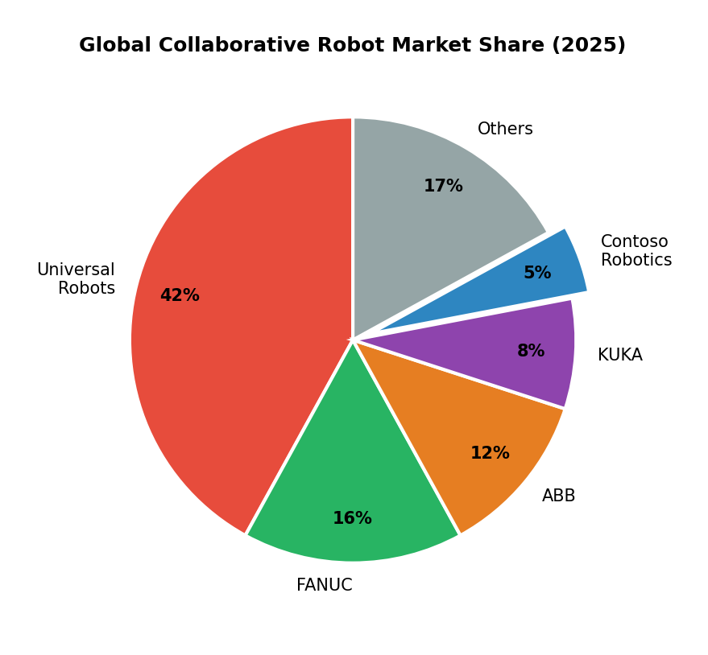
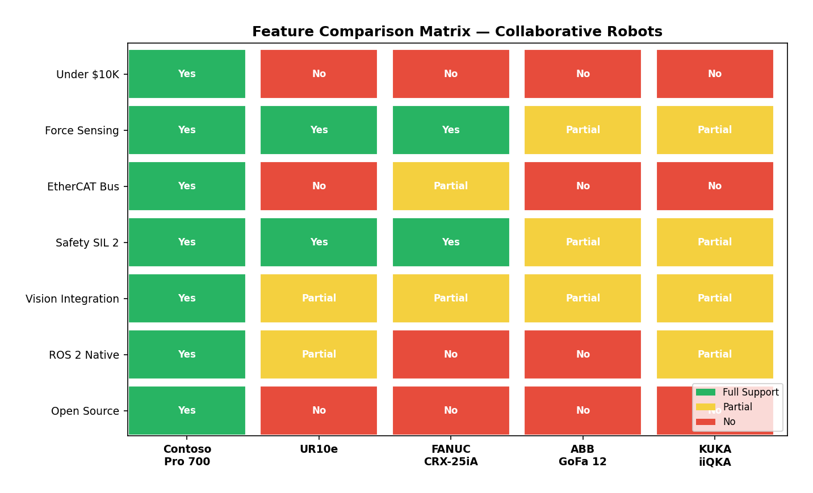

This report provides a comprehensive analysis of the collaborative robot (cobot) market as of Q1 2025, covering market size and growth projections, detailed competitor profiles, a feature comparison matrix, Contoso Robotics strengths and gaps, and strategic positioning recommendations. This document is intended for internal use by the Contoso Robotics product management, marketing, and executive leadership teams.
The global collaborative robot market reached an estimated $3.8 billion in 2024 and is projected to grow at a compound annual growth rate (CAGR) of 32.5%, reaching $12.3 billion by 2028. The acceleration is driven by four macro-level trends:

| Payload Tier | 2024 Market Share | Growth Rate (CAGR) | Key Applications |
|---|---|---|---|
| Under 5 kg | 28% | 25% | Electronics assembly, lab automation, light inspection |
| 5–10 kg | 38% | 36% | Machine tending, screw driving, palletizing, general assembly |
| 10–20 kg | 24% | 34% | Heavy assembly, welding, material handling |
| Over 20 kg | 10% | 40% | Automotive body-in-white, heavy palletizing, logistics |
The 5–10 kg payload tier represents the largest and fastest-growing mainstream segment. This is the primary battleground for the CoBot Pro 700 (10 kg payload, 700 mm reach). For full specifications of the CoBot Pro family, see the CoBot Pro — Product Overview Brochure from Contoso Robotics Marketing.
Headquarters: Odense, Denmark (subsidiary of Teradyne) | Market Share: 42% | Revenue (2024E): $1.6 billion
Universal Robots is the dominant market leader, having pioneered the modern cobot category with the UR5 in 2008. Their current lineup includes the UR3e (3 kg), UR5e (5 kg), UR10e (12.5 kg), UR16e (16 kg), and UR20 (20 kg). UR's primary strengths are brand recognition, the largest ecosystem of third-party accessories (UR+ platform with 400+ certified peripherals), and a vast installed base of over 75,000 units globally.
Weaknesses: Software-only safety system (no dedicated safety controller hardware), limited first-party vision capability (relies on UR+ partners), higher total cost of ownership when peripherals are included, and aging software platform (PolyScope) that lacks modern features like ROS 2 native integration.
Headquarters: Oshino, Japan | Market Share: 14% | Revenue (Cobot Division, 2024E): $530 million
FANUC's CRX series (CRX-5iA, CRX-10iA, CRX-20iA, CRX-25iA) leverages the company's industrial robot heritage for exceptional mechanical reliability and precision. The CRX-10iA (10 kg, 1249 mm reach) is the most direct competitor to the CoBot Pro 700.
Weaknesses: Requires external safety PLC for SIL-3 compliance, no first-party vision module, relatively complex programming interface compared to modern cobot platforms, limited ROS support, and premium pricing ($42,000+ for the CRX-10iA base system).
Headquarters: Zurich, Switzerland | Market Share: 11% | Revenue (Cobot Division, 2024E): $420 million
ABB offers the GoFa and SWIFTI cobot families. GoFa CRB 15000 (5 kg) competes in the light-payload segment, while SWIFTI CRB 1100 targets higher-speed applications with reduced collaborative capabilities. ABB's integrated SafeMove safety system is a close analog to the SC-100.
Weaknesses: Limited payload range in the collaborative segment (GoFa maxes out at 5 kg), no 10 kg class collaborative offering, higher base pricing than UR, and ABB's RobotStudio software — while powerful — has a steeper learning curve than purpose-built cobot platforms.
Headquarters: Augsburg, Germany (subsidiary of Midea Group) | Market Share: 7% | Revenue (Cobot Division, 2024E): $265 million
KUKA's LBR iisy series (3 kg, 6 kg, 11 kg, 15 kg) features 7-DoF joint architecture for enhanced dexterity. The LBR iisy 11 (11 kg payload) is the most relevant competitor to the CoBot Pro 700.
Weaknesses: Higher pricing than all competitors in the segment ($48,000+ for LBR iisy 11), limited distributor network outside of Europe, software ecosystem significantly smaller than UR+, and the 7-DoF architecture adds mechanical complexity that increases maintenance costs.

| Criterion | CoBot Pro 700 | UR UR10e | FANUC CRX-10iA | ABB GoFa 5 | KUKA iisy 11 |
|---|---|---|---|---|---|
| Payload (kg) | 10 | 12.5 | 10 | 5 | 11 |
| Reach (mm) | 700 | 1300 | 1249 | 950 | 1300 |
| Repeatability (mm) | ±0.02 | ±0.05 | ±0.04 | ±0.05 | ±0.03 |
| Integrated Safety HW | SC-100 (SIL-3) | None (SW only) | None (ext. PLC) | SafeMove | None (ext. PLC) |
| First-Party Vision | VM-200 | None | None | None | None |
| ROS 2 Native | Yes | Community | No | No | No |
| Control Loop Rate | 1 kHz | 500 Hz | 250 Hz | 250 Hz | 1 kHz |
| Setup Time (avg.) | 4 hours | 8 hours | 12 hours | 10 hours | 10 hours |
| Base System Price | $34,500 | $36,000 | $42,000 | $38,000 | $48,000 |
| Ecosystem Size | 85+ partners | 400+ (UR+) | 50+ partners | 70+ partners | 40+ partners |
For technical details on the force-torque sensing system that enables our ±0.02 mm repeatability, see the Force-Torque Sensor Specification in the Engineering documentation.
Based on the competitive analysis, Contoso Robotics should position the CoBot Pro family around three core differentiators that are difficult for competitors to replicate in the near term:
Lead with the integrated SC-100 safety controller as the defining feature. No other vendor offers SIL-3 hardware safety integrated into the cobot. This message resonates with safety-conscious industries (automotive, pharmaceutical, food) and simplifies the procurement process by eliminating the need to source and integrate external safety components.
Position the VM-200 as a unique value proposition — the only first-party cobot vision system with onboard AI. Competitive battle cards should highlight the $8,000–$15,000 cost premium and weeks of integration time that competitors require for third-party vision solutions.
The 4-hour deployment time is a tangible, measurable differentiator. Use customer success stories — such as the Meridian Automotive deployment — to demonstrate real-world deployment speed. This message is particularly effective for the SME segment, where deployment cost and disruption are primary adoption barriers.
Confidential — Contoso Robotics Internal Use Only | Document version 3.0 | Last updated: 2025-01-25 | Contoso Robotics Product Management and Marketing